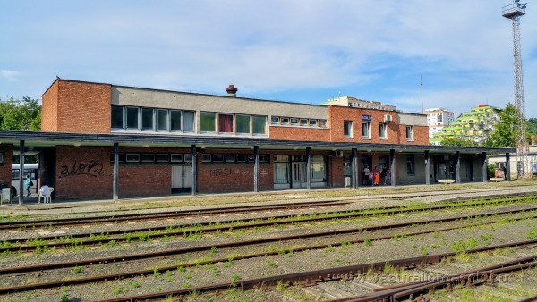
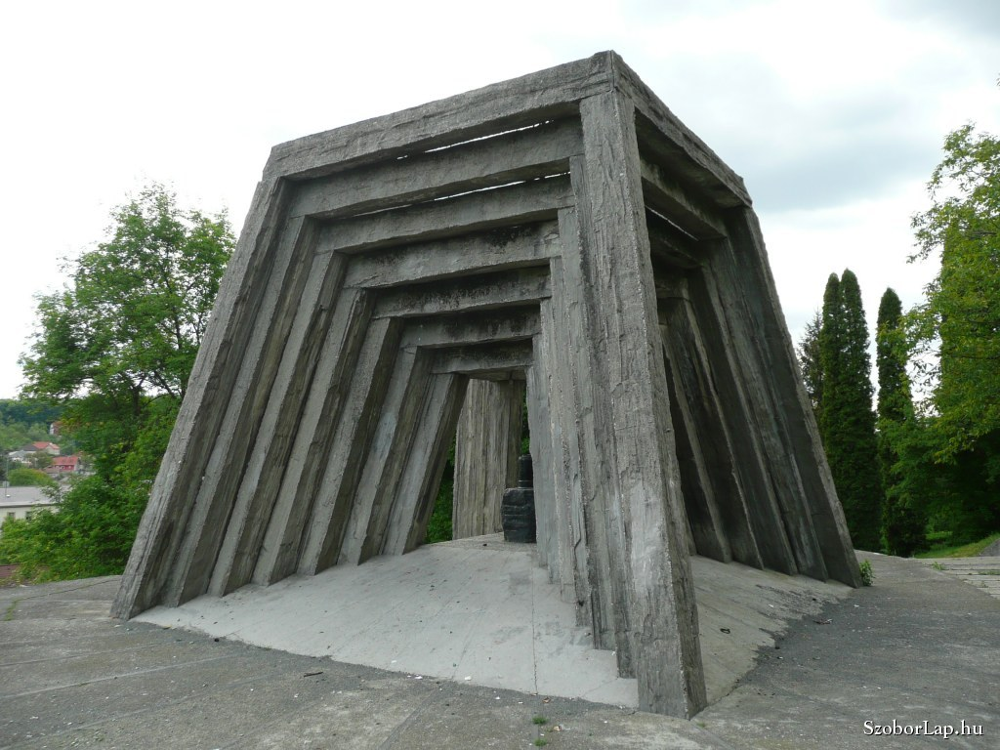

Warum lohnt sich ein Besuch in Komló?
Komló ist eine Bergbaustadt in Baranya, geprägt von der Nähe des Mecsek, industrieller Geschichte und neuen kulturellen Orten.
Der Audioguide für Komló wird bald verfügbar sein.

Entdecke Komló mit einem Klick!


Komló ist eine Bergbaustadt in Baranya, geprägt von der Nähe des Mecsek, industrieller Geschichte und neuen kulturellen Orten.
Der Audioguide für Komló wird bald verfügbar sein.

Besucherzentrum, Bibliothek, Museumssammlung und Familienprogramm an einem Ort, mit einer modernen, erlebnisorientierten Seite von Komló.
Route planenEin kleiner, freundlicher Zoo in der Munkácsy Mihály Straße, geeignet für Familien und Kindergruppen als gut erreichbares Programm.
Route planen
Ein Erinnerungsort zur Bergbaugeschichte von Komló, der die industrielle Vergangenheit der Stadt greifbarer macht.
Route planen